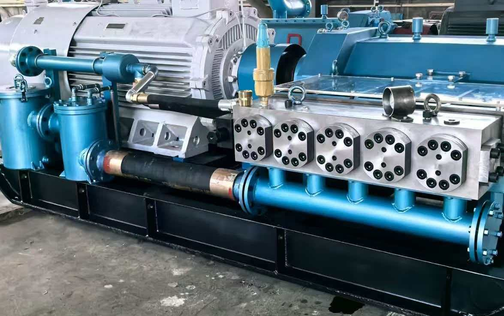
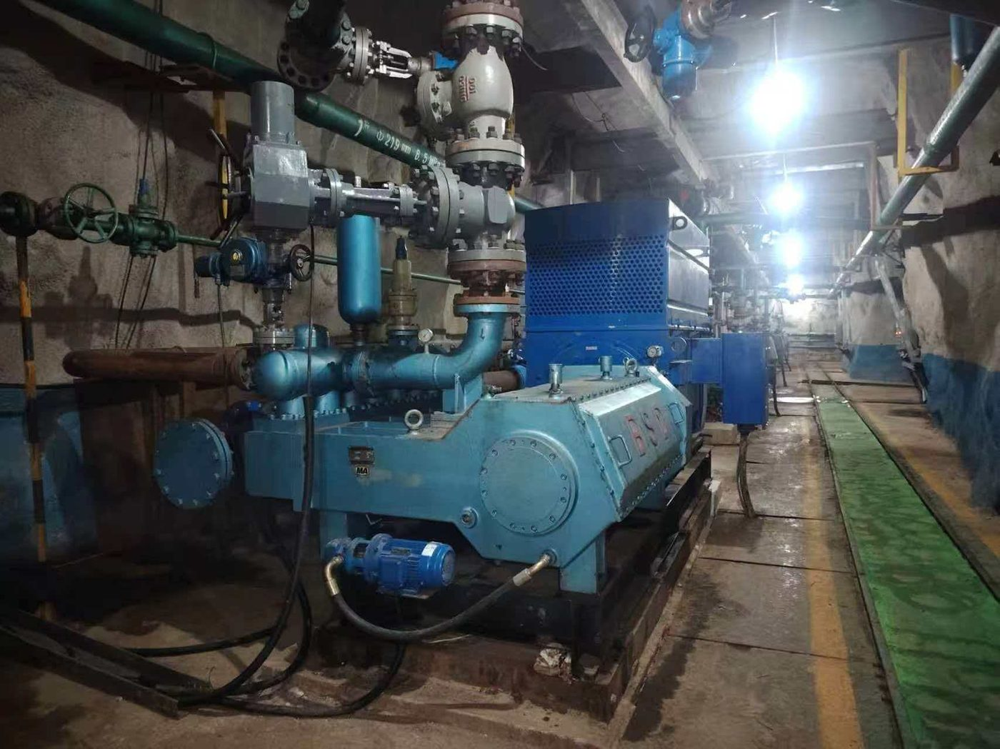
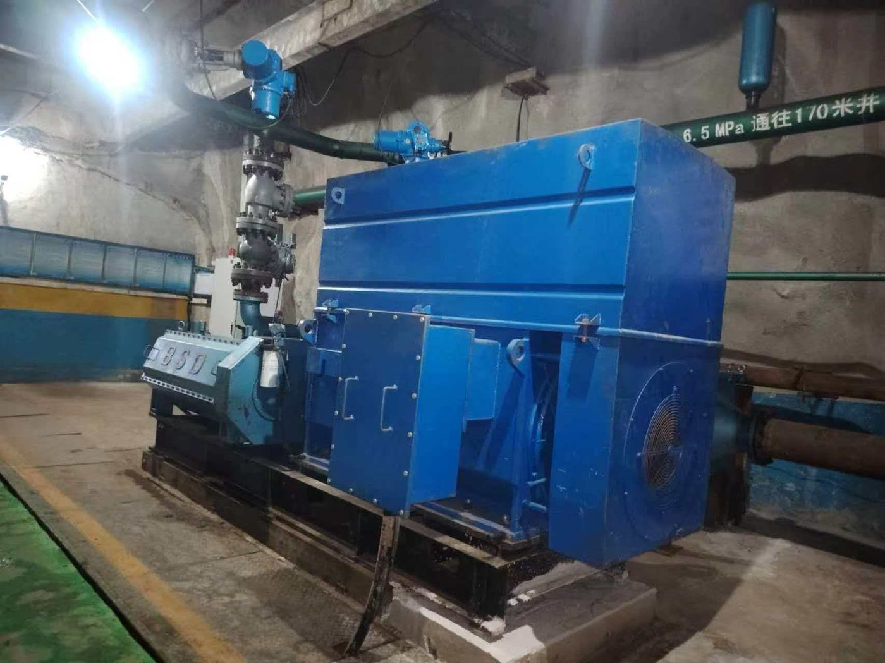

关于我们
大连宏实科技有限公司面向全球供应高压往复柱塞泵与浆料泵，出口业务由中国辽宁大连运营。
公司 2018 年成立于上海浦东，属同济南汇科技园体系。产品研发依托四川省机械研究设计院（始建于 1957 年）——一家在机械、市政、石化与电力领域具备设计与 EPC 资质的国有科研院所。
我们的工程中心专注两条技术路线：高速直驱与低速大扭矩驱动，这也是我们所有泵与风机产品背后的两种架构。
多数项目都从一个实测工况点开始，而不是一份技术规格书。我们要流量、压力、运行小时和一次功率读数，然后给出机型和一个数字。如果算不出节电，我们会直说——自己赚不回投资的泵，不算项目。
现场



可报 FOB 大连 / FOB 上海或 CIF，随货提供英文样本、性能曲线与装箱单。